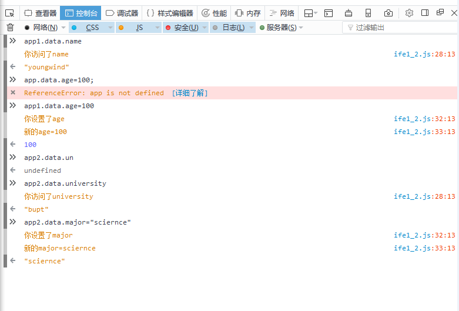

动态数据绑定（一）
new Observer返回一个对象，其 data 属性要能够访问到传递进去的对象。
实现结果：
问题：
按照说明在控制台输入代码，app这个元素未定义啊,难道是要自动创建未定义的元素？
想了下不会......所以是说明原本想写的是“app1.data.age = 100; // 你设置了 age，新的值为100” ？
new Observer返回一个对象，其 data 属性要能够访问到传递进去的对象。
按照说明在控制台输入代码，app这个元素未定义啊,难道是要自动创建未定义的元素？
想了下不会......所以是说明原本想写的是“app1.data.age = 100; // 你设置了 age，新的值为100” ？